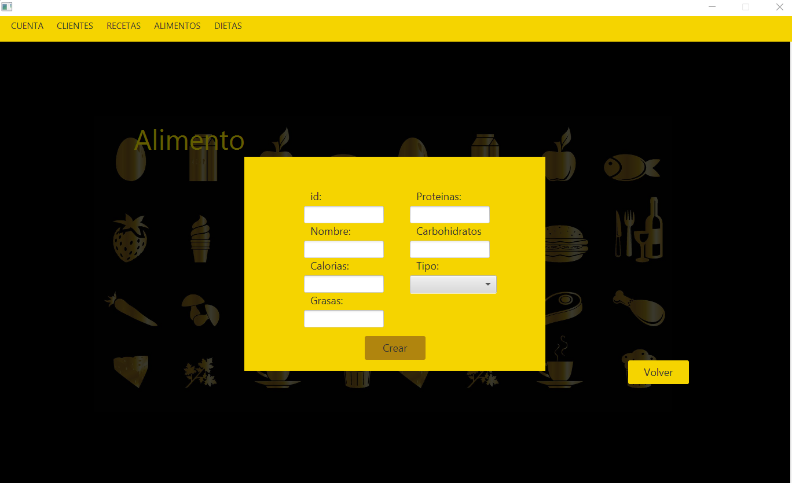
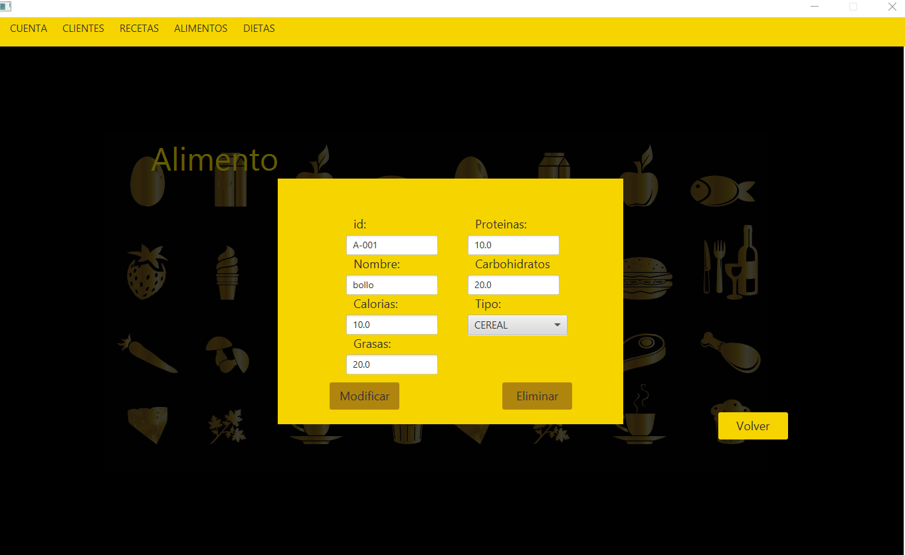
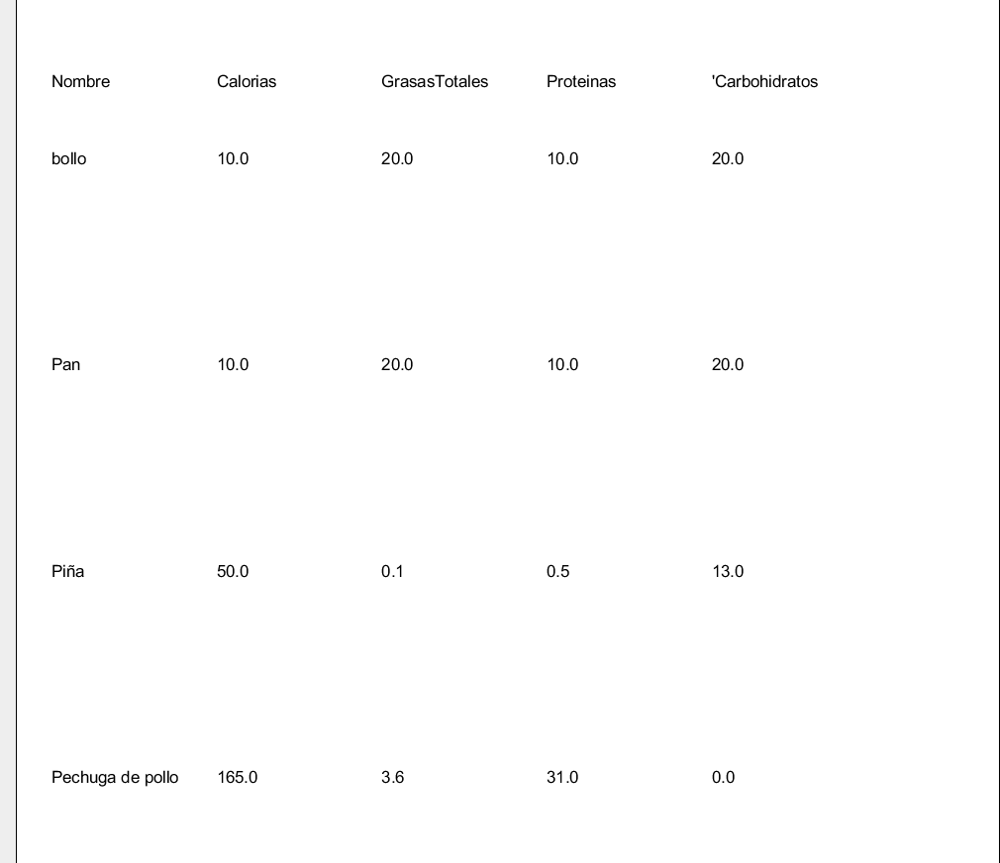

Esta ventana permite realizar las operaciones de mantenimiento básico de los datos de alimento. El usuario podrá mediante los controles de los que dispone la ventana crear, modificar y eliminar los alimentos de la aplicación. Así mismo podrá generar un informe que contiene un listado de los alimentos con sus correspondientes datos.
Para crear un alimento debera pulsa el boton de Añadir y sera llevado a otra ventana donde podra poner los datos del alimento
Para crear un alimento tendremos que llenar los campos que nos muestran en esta ventana. Al tener todos los datos puestos, podremos darle al boton Crear, si hemos puesto los datos correctamente, nos llevara a la ventana de la tabla alimento actualizada, es decir con el alimento añadido. Tambien tenemos un boton de Volver, donde te llevara a la ventana Tabla Alimento.
Modificar datos de AlimentoPara modificar los datos de un alimento primero deberá seleccionar el alimento haciendo click en una fila deseada de la tabla de alimentos.Luego tendremos que pulsar el boton de Añadir y no llevara a otra ventana donde nos aparece los datos de alimento en sus campos correspondientes.
En esta ventana, los campos estaran con los datos correspondientes. Podremos modificar sus caracteristicas, pero menos su nombre y su ID. Al cambiar los Datos podemos darle al boton Modificar para actualizar sus datos. Tambien tenemos la opcion del boton Eliminar, donde podremos eliminar dicho alimento y por ultimo el boton Volver donde nos llevara a la ventana Tabla alimento sin nunguna modificacion.Al realizar la accion de cada boton satisfactoriamente nos llevara a la ventana Tabla Alimento
Filtrar datos de AlimentoPara filtrar los datos de un alimento primero deberá seleccionar un campo que dispone en la ventana,tenemos 5 campos a seleccionar, nombre, menor, mayor, entre y tipo; tambien hay una opcion de que caracteristica de alimento quieres filtrar; esa opcion es para los campos que contengan numeros. La busqueda va en serie, si escribes en el primer campo, te buscara segun lo que pongas en el campo, pero si escribes en el primer campo y en el segundo; la busqueda que te hara sera solo del primer campo. Al seleccionar y introducir los datos que queremos buscar, podremos darle al boton Filtrar y nos buscara segun lo que hemos puesto en el campo. Si tienes los campos vacios y le das al boton Filtrar, te buscara todos los datos de la tabla Alimento.
Imprimir listado de AlimentoPulsando el botón Informe se abrirá una ventana donde se puede ver un documento
que contiene un listado de los alimentos que existen en la aplicación:

Mediante los botones de la parte superior de la ventana podrá imprimir o almacenar dicho informe.
Pulsando el botón X se cerrará la aplicación.
AyudaPulsando el botón Ayuda verá este documento de ayuda.